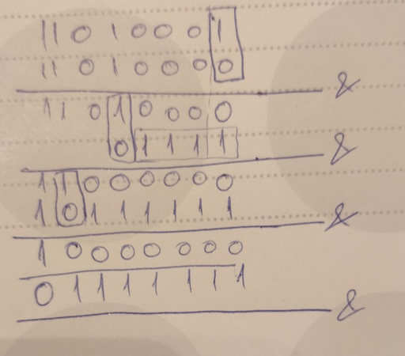

Because I know pretty well the Hanoi tower problem, I started with Day 2.
The Matrix chain multiplication problem is a quite straightforward example of Dynamic programming.
I implemented the basic algorithm. Wikipedia also points to a better algorithm, which I only skimmed over since it's quite complex and well beyond what I'm doing here.
It took me:
- thinking: 2m
- coding: 17m
- debugging: 9m
- total: 28m
In future I think I can limit debugging greatly since I made some noob mistakes which required quite a bit of looking around the code to fix, but the coding went smooth and I didn't search the documentation that much.
You can find the code in the usual place. Nothing fancy. Maybe the @functools.lru_cache decorator is quite nice to check out since it makes memoization a lot easier to add.
Given an int, how many ones are there in its binary representation.
For example: 0b00101 -> 2; 0b001011101 -> 5. You got the idea, easy peasy.
def count_bits(n): count = 0 while n > 0: count += n & 1 n >>= 1 return count
It works, but what the hell man?! That's kids stuff.
Right, of course you can do better than that:
def count_bits_wicked(n): count = 0 while n > 0: n &= n - 1 count += 1 return count
What?
Yeah, that's what I thought when I first saw that. I hate bit twiddling. I personally think it cripples the mind of any sane person.
However, this one above is pretty easy to grasp and understand if you try it on a piece of paper.
Here, of course I did that for you:
Rumour has it that every horizontal line is a bitwise and between the current ``n`` and ``n-1``. Except from the shortest one(second to last) which is a typo.
So you can see how every and operation essentially knocks out one set bit at a time(or one one, if you prefer that).
Thus, the complexity is Theta(bits_set) as opposed to my solution which went through all the bits every time, yielding Theta(bits) in complexity.
This second solution is not mine. On this bit porn site you can learn more about it, and also find more bit twiddling porn if you're into that.
No times for this problem since the naive solution took me nothing, and the smart one is not mine.